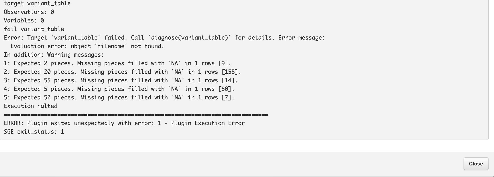

Standard troubleshooting protocol¶
Contents
Are my input files correct?¶
Since there are 4 different input requirements, user can sometimes upload the wrong file. They might upload wrong barcodes or wrong sampleIDs. This needs to be verified first before moving forward.
Is my reference file correct?¶
Your run might fail when you align to a different reference file. This problem should go away once we hard code the reference for release Check the reference version like v81_ref1 or V72_ref4 this should match correctly.
Which step was the breakpoint?¶
Look at the log file and figure out the step at which the plugin broke and try to rerun that.
Collect input files and run the container from the command line¶
If the docker run fails, you have to go into the docker and run it step-by-step until you find the culprit.
Where do I find the main R script that runs the plugin?¶
For Ion Torrent version, the main R script which wraps the entire plugin is located in the workflow folder. It is named as TypeSeq2.R Run this script step-by-step manually to identify failures. Drake is similar to snakemake and looks for targets.
Log Files¶
Always look at the log file to understand where the code broke. TypeSeq is usually good with pointing out the step where it failed. Log files are available to view in the GUI. Here are some example screenshots
This example shows the log file in which the plugin threw an error at the variant table step. Good idea is to start tracing the steps here.
This example shows the args_df failed which is the dataframe. This step is used for parsing the command line arguments and storing it in the dataframe. Look at the TypeSeqHPV.R file to see which R function it is calling and run that function step-by-step.

Steps involved in debugging inside the container¶
First step is to identify the docker details by looking at the log file. For example,
This is a typical plugin run command for Typeseq2. Here you can use some parts of the code to log into the docker.
Step 1, log into the server (see where this was run. This example is from professor, so I will link the professor details below)
After logging in, use this command
Notice that this is similar to the first part of the docker run command. Except this command uses ‘-it’ instead of ‘-i’
This is an interactive mode (-it) where we can go inside the container and look at the error. I am mounting the directories to the docker so that all the input/output files are in order.
Use should see the console change to /mnt
Since the docker uses R and I like to have access to shell without having to load everything all the time, docker uses radian.
Type radian and it should take you to R console
You can switch to regular command line by typing “;” and back to R by pressing backspace(delete in mac).
Now with R, copy paste all the packages we need that is in the beginning of the Typeseq2.R workflow. It should be in /workflows/Typeseq2.R (aka load library)
After loading all this, uses loadd() to load all intermediate files (basically everthing the plugin created before it failed). Now, look at the log file, it usually gives out messages like fail target xyz If you know which step it was, use diagnose(step) command to see more info on the error.
Since the code is in R, you can easily understand what is hapenning but sometimes, it is hard to find the error in that case :-
There are some comment lines for some of the scripts which are very long, in that case, it will print out something like this - line 114 before dying if that step is clear (example: typing_variant_filter file)
Running the code step-by-step inside the docker after loading the targets is a quick way of finding it. Once you find the error that needs some code fix, copy the files to T drive (I copy it here - /CGF/Research/Amulya, map it to Rstudio which is linked to your github (I usually keep them connected so that I can push updates easily). Load all the files, try to run that step and see how it works. If the code you changed solves the problem, push it to github and rebuild the docker on the server.
For rebuilding the docker follow this Example - zapp
Log into Zapp
cd into TypeseqHPV2/docker
Run -
This will help us rebuild the docker and tag it. cgrlab/typeseqhpv:development_191226 is the official development docker. Each time you fix something in the code, you need to rebuild it. Another way is to start a build on the dockerhub. That takes longer (~15 mins) and I usuually don’t do that. You can build it locally and then push it to docker hub.
Never touch the base docker.
If you are having issues with building docker, contact Eamonn, it is usually the issue with DNS that need some permission.